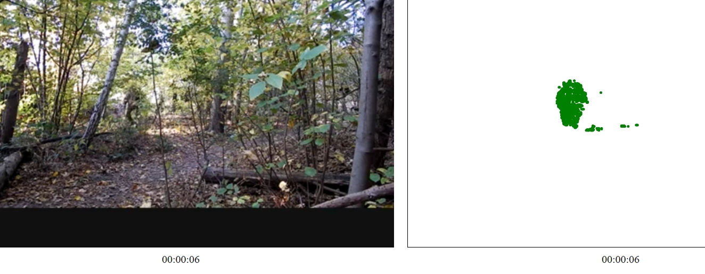
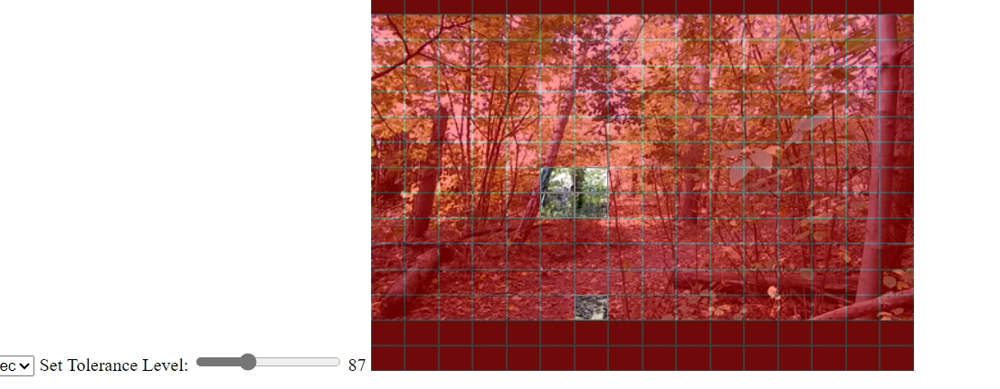
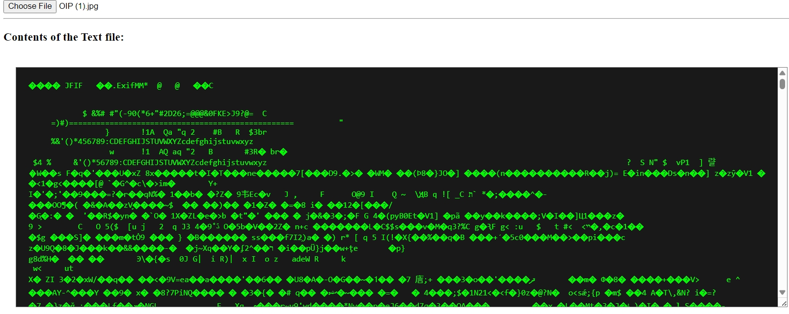
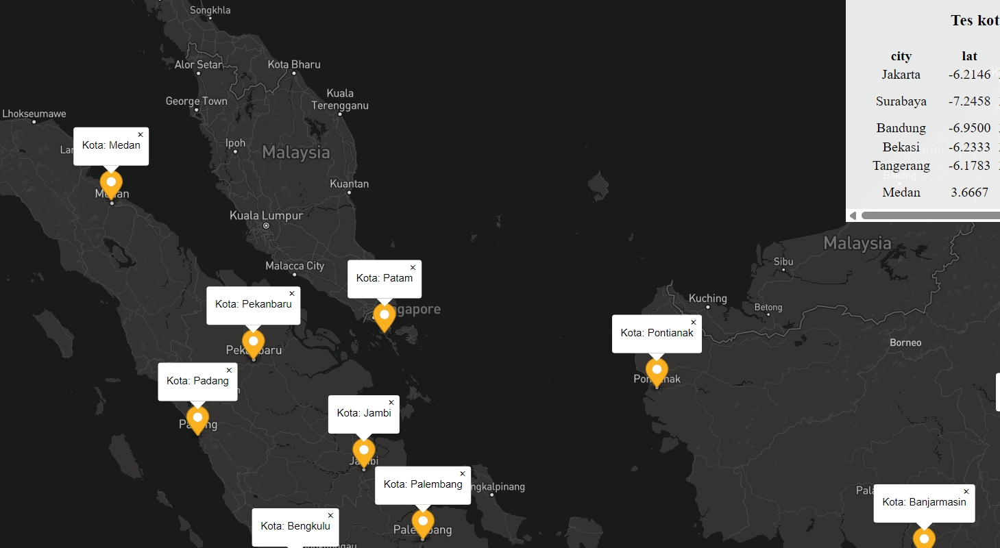
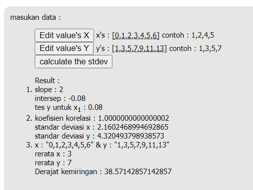
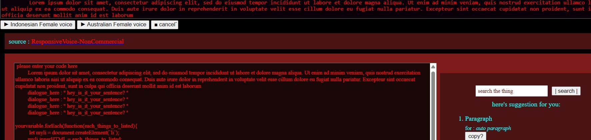

Utilities
Beta / Under constructing script
- ping geolocation && DOM test untuk melihat IP publik sendiri, informasi device yang terbaca sistem serta OS & browser yang sedang dipakai
- Word Analyze In textarea ByLabel-Word-compiling, Analyzing used words & List related sentences & words .
next : multi References search, analyzing text, spjok known auto filter...
- [under dev.] Tracking in "detailed" spots-by-spots
| saving data logs, video check 
- [under dev.] Efficient Tracking the movement grid-by-grid
| rel: file Input video, grid | 
- [under dev.] Day, Week and Month Target Project plan
- [under dev.] Idea Management (+archieve) simple idea save next : IQAC-Thing
- [under dev.] Youtube Notes Type your thought in time stampt of youtube
- [under dev.] VideoFile Notes Writing note on video file, along with screen shot and time stampt
- [under dev.] File reader (Javascript based) to see files on perspective by text based
Later Next : HEX , recognizing salt, recognizing pattern of encrypt ... 
- [under dev.] Indonesia map-city & state 
- [under dev.] Analysist Validation Test
| Later on : Graph Visualizing, ANOVA etc 
- [under dev.] texting Test: Text to Voice | next Upgrade suggestion, Upgrade scheme, Comparasion, Analisa text : multi tafsir, SPJOK 
- [under dev.] texting Test: Sentence dictionary word by word | Kamus tiap kata dalam kalimat (default : KBBI based)i
- [under dev.] Calculation Average,summarizing, Q1,Q2 etci
- [under dev.] Day, Week and Month Target Project plan
- Idea Management (+archieve)
- [under dev.] manual lyric maker Test |
next future: automatic /spectrum analysis
....
est.next update : 31/09/2024
see ya Later !